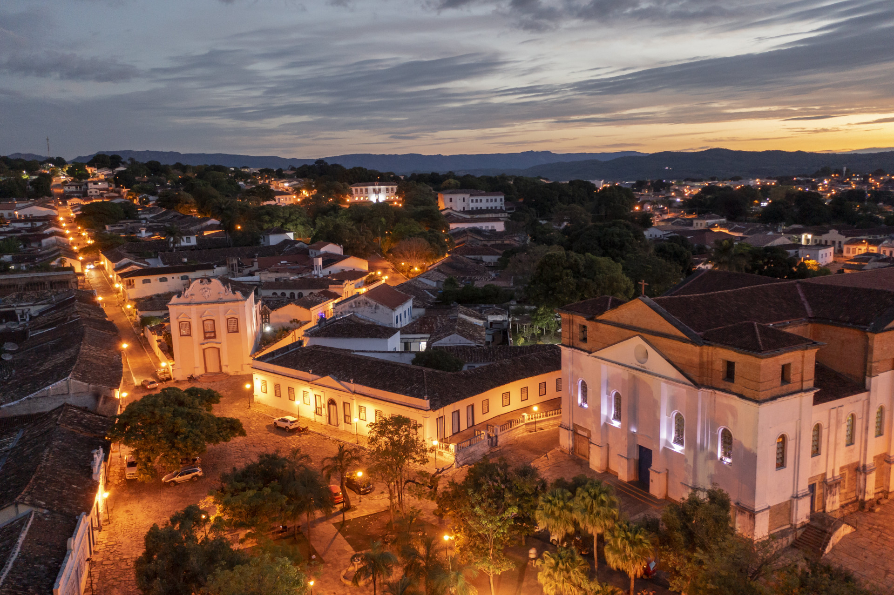

Goiás é um estado localizado na região Centro-Oeste do Brasil, conhecido por suas vastas planícies e clima tropical. A economia do estado é impulsionada pela agropecuária, especialmente na produção de soja, milho, carne bovina e leite. Goiás também se destaca pela indústria e pelo comércio, especialmente em sua capital, Goiânia, que é um importante centro urbano e econômico da região. O estado possui várias atrações turísticas, como as cidades históricas de Caldas Novas, famosa por suas águas termais, e Pirenópolis, conhecida pela preservação de sua arquitetura colonial. A cultura goiana é rica, com influências do interior, e a culinária típica inclui pratos como a galinhada e o pequi.
